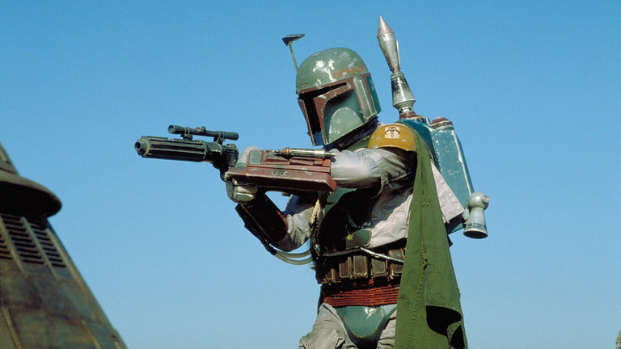

""
- Franchise Taglines -

Luke Skywalker
Actor: Mark Hamill
The main protagonist of the film, formerly, a simple farm boy on the planet of Tatooine, Luke has now grown into a trained Jedi Knight determined to defeat the Empire, Darth Vader and Darth Sidius
Prinecss Leia Organa
Actress: Carrie Fisher
She is the Princess of Aldeeran and a part of the Rebel Alliance, whose goal is to over-throw the Galactic Empires rule, as she holds them responsible for the destruction of her planet.
Han solo
Actor: Harrison ford
After a year of being frozen in carbonite and subsequently rescued from Jabba the Hutt and Boba Fett by his companions. Solo joins the Rebel alliance to help them take down the Empire, by taking part in the battle of Endor.
R2-D2
Actor: Kanny Baker
R2-D2 is an astromech droid and C-3PO's long time companion. He, along with C-3PO, take part in the infiltration of Jabbas Palace, as well as the Battle Of Endor
C-3PO
Actor: Anthony Daniels
C-3PO is a protocol droid serving under the Rebel Alliance alongside R2-D2. As a protocol droid with knowledge of other languages, he was used as a means of communication between the human characters and species from other planets
Yoda
Actor: Frank Oz
Yoda was a former Jedi Master and Luke Skywalkers current teacher. He helps and trains Luke to learn the ways of the force, so Luke can be prepared to face Darth Vader and restore balance to the galaxy.
Darth Vader
Actor: David Prowse
Voice Actor: James Earl Jones
Darth Vader is the main antagonist of the film, a Sith Lord and second-in-command of the Galactic Empire, to Darth Sidious.
Darth Sidious
Actor: Ian McDiarmand
The head of the Galactic Empire and Darth Vaders superior/ Sith Master, he is considered the most feared being in the galaxy
Boba Fett
Actor: Jeremy Bulloch
Considered one of the greatest bounty hunters in the galaxy, he is currently under the employment of Jabba THe Hutt to capture Han Solo.